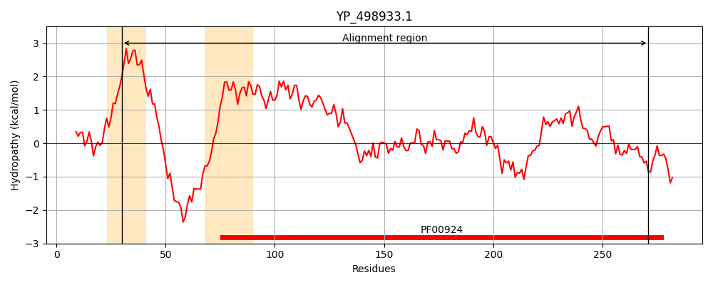
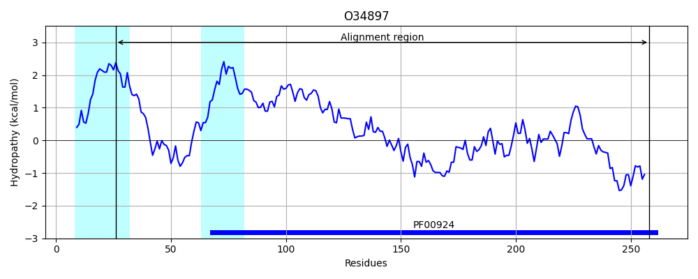
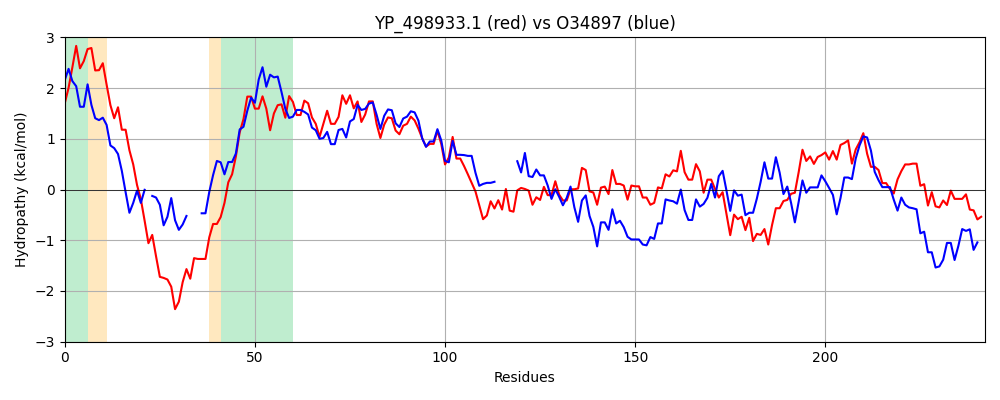

Hit Accession: O34897
Hit TCID: 1.A.23.3.1
Hit Description: gnl|BL_ORD_ID|7158 gnl|TC-DB|O34897|1.A.23.3.1 YKUT PROTEIN - Bacillus subtilis.
Mach Len: 242
e:0.000000
Query TMS Count : 2
Hit TMS Count: 2
TMS-Overlap Score: 1.650000
Predicted Substrates:CHEBI:25728;osmolyte
BLAST Alignment:
Score: 364 , Bit scores: 144 bits, E-value: 7.9e-42, Alignment length: 242, Percentage identity: 35
Query: 30 MIVIYIIVALIVIKILNKMIEQGFKIQNKSKKSNKKRSKTLISLVQNVVKYIVWFIVITTILSKFGISVEGVIASAGVVGLAVGFGAQTIVKDVITGFFIIFESQFDVGDYVKINNGGTTVAEGTVKSIGLRSTRINTISGELTILPNSSMGEITNYSITNGTAIVKIPVSVEENIDNVDKKLNKLFTSLRSKYYLFVSDPVVIGIDAIEDTRVILRISAETIPGEGFAGARIIRKEVQKMF 271
MI++Y IV + +KI+ + + F+ QN R+ TL SL N+ Y + FI +L F ++A AG+VGLAVGFGAQ +V D++TGFFI+ E Q DVGDY+ + + +G V+ +GLR+T+I + G L +PN ++ ++N+S A+V I V E NID + L ++ + P VIGI + + +++R+ A+T E + R++RKE++ F
Sbjct: 26 MILLYFIVRSLGMKIIKHLFAK-FEEQNSLSIG---RAHTLRSLTLNIFAYTLIFIFFVMVLDLFHYDPSALLAGAGIVGLAVGFGAQGLVSDIVTGFFILLEKQLDVGDYITV-----STFDGIVEQVGLRTTQIRSFDGTLHYIPNRNITNVSNHSRGTMQALVDIKVPAERNIDEMIHILQQVCDETAAALPQIKEGPNVIGIQELGTSEIVIRVIAKTENMEQWRVERVLRKEIKNAF 258 | Protein Hydropathy Plots: |
|---|
|  |  |
Pairwise Alignment-Hydropathy Plot:
|
|---|
|  |